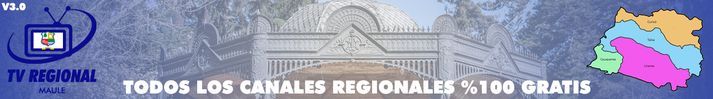

Canales y Estaciones de Radio - Nacionales
Chile
Canales y Estaciones de Radio - Talca
Constitución - Curepto


Canales y Estaciones de Radio - Cauquenes
Cauquenes - Chanco - Pelluhue
Canales y Estaciones de Radio - Curicó
Curico - Hualañé - Licantén - Molina - Rauco - Romeral - Sagrada Familia - Teno - Vichuaquén
Canales y Estaciones de Radio - Linares
Colbún - Linares - Longaví - Parral - Retiro - San Javier - Villa Alegre - Yerbas Buenas